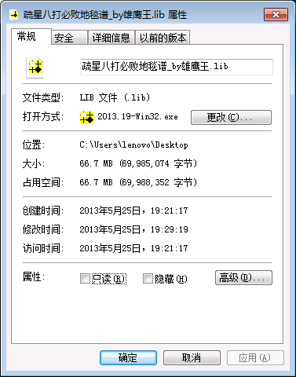

【分享】疏星开局八打必败地毯谱_by雄鹰王2010
#1 【分享】疏星开局八打必败地毯谱_by雄鹰王2010作者：雄鹰王 发表时间：2013-5-25 19:57:55
原文载于百度五子棋贴吧：http://tieba.baidu.com/p/2350204334，转载请注明出处。
说明：
1. 本谱为本人历时近1个月制作完成，其间也曾参考过前人发表的疏星八打必败谱，但以前网络上的棋谱无一例外都有错误，并且省略了不少黑棋强防或冲四后强防的分枝，在本谱中已经得到完善且全部扫描到终结者没有防守为止。本谱.lib文件大小为66.7M，共计1167万手。
2. 由于该谱是从我总谱中保存下来的分枝，所以可能省略了极少数的同型分枝。如有发现，望大家批评指正，我会把它补充进去。
3. 对先前曾发表疏星八打必败棋谱的作者以及其间给过我帮助的@该用户名被屏蔽 @浓睡不消残酒愁大神表示感谢！
4. 本谱转载请注明出处。如有错误或不足，望大家批评指正。非常感谢！

 疏星八打必败地毯谱_by雄鹰王.part001.rar
疏星八打必败地毯谱_by雄鹰王.part001.rar［此帖子已被 雄鹰王 在 2013-5-25 19:58:47 编辑过］
［此帖子已被 雄鹰王 在 2013-5-25 20:02:00 编辑过］
［ 小红眼镜 于 2013-5-25 21:19:15 时花20金币送鲜花一朵］
［ 小丸.net 于 2013-5-25 22:30:34 时奖励此帖[金币加 100 威望加1］
［ 换你一笑 于 2013-5-26 13:30:49 时花20金币送鲜花一朵］
#2 Re:【分享】疏星开局八打必败地毯谱_by雄鹰王2010作者：黄药师 发表时间：2013-5-25 22:02:25
八打~~~，前7打是什么？#3 Re:【分享】疏星开局八打必败地毯谱_by雄鹰王2010作者：小丸.net 发表时间：2013-5-25 22:30:37
你有没有听小天的书上写道：现在几十兆甚至上百兆的谱都是垃圾了么。。。。不过，你挺辛苦的。。。。奖励一下。
#4 Re:【分享】疏星开局八打必败地毯谱_by雄鹰王2010作者：黄药师 发表时间：2013-5-25 22:38:33
书还在路上，看了一下物流还在福建飘着呢。。。。。。#5 Re:小丸.net【==Re:【分享】疏星开局八打必败地毯谱_by雄鹰王2010==】作者：雄鹰王 发表时间：2013-5-25 23:33:09
小天的书我还没拿到，不过他是怎么说的呀？为啥现在几十兆甚至几百兆的谱都已经是垃圾了？#6 Re:雄鹰王【==Re:小丸.net【==Re:【分享】疏星开局八打必败地毯谱_by雄鹰王2010==】==】作者：小丸.net 发表时间：2013-5-26 10:31:30
引用：你觉得一个谱上全是C，没强没弱，无用的防点一堆，这种谱有什么用么。
原文由 雄鹰王 发表于 2013-5-25 23:33:09 :
小天的书我还没拿到，不过他是怎么说的呀？为啥现在几十兆甚至几百兆的谱都已经是垃圾了？
#7 Re:【分享】疏星开局八打必败地毯谱_by雄鹰王2010作者：屏蔽 发表时间：2013-5-26 11:04:31
 无用之用乃为大用
无用之用乃为大用#8 Re:【分享】疏星开局八打必败地毯谱_by雄鹰王2010作者：怪 发表时间：2013-5-26 12:05:37
看到标题就觉得很恐怖#9 Re:【分享】疏星开局八打必败地毯谱_by雄鹰王2010作者：换你一笑 发表时间：2013-5-26 13:29:26
作为参考还是可以的，虽然这个东东很早就有了。
#10 Re:【分享】疏星开局八打必败地毯谱_by雄鹰王2010作者：棋痞枫叶 发表时间：2013-6-1 2:26:27
这个8很久以前就地毯了#11 Re:棋痞枫叶【==Re:【分享】疏星开局八打必败地毯谱_by雄鹰王2010==】作者：雄鹰王 发表时间：2013-6-1 12:55:04
但是怎么好像我找到的以前的地毯铺都不完善的，要么漏了一些分枝，要么有错杀#12 Re:【分享】疏星开局八打必败地毯谱_by雄鹰王2010作者：草儿要出头 发表时间：2013-6-1 16:16:06
 这个嘛、错杀。误杀。开两个终结者不就知道了！一个吧、正版。一个破解!要是实在不放心。哪直接再开个黑石！
这个嘛、错杀。误杀。开两个终结者不就知道了！一个吧、正版。一个破解!要是实在不放心。哪直接再开个黑石！